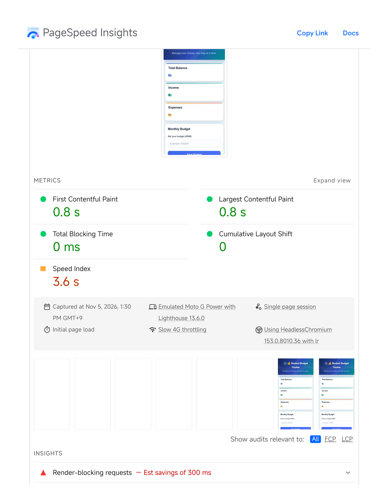

WEB PROGRAMMING · WEEK 9.2
Performance Optimization Report
This page separates the latest November 5, 2026 PageSpeed Insights results from the original Week 9.2 coursework files. The audited website was the Group 4 Student Budget Tracker, not this personal portfolio.
Latest Lighthouse scores
Latest audit evidence · November 5, 2026
These two images are the supplied report evidence for the latest mobile test. They show the current reported score and its lab metrics; they are not screenshots of the personal portfolio.


Lab metrics
Moto G Power mobile emulation · Slow 4G · Lighthouse 13.6.0 · 1:30 PM KST. No field data available.
Opportunities
- Render-blocking requests: estimated 300 ms savings.
- Efficient cache lifetimes: approximately 5 KiB flagged.
Optimization work documented for this assignment
- Defer non-critical JavaScript.
- Compress and correctly size images; reserve image dimensions.
- Keep CSS lightweight and avoid costly effects.
- Batch DOM changes with DocumentFragment and replaceChildren.
- Use event delegation and cache static assets.
Evidence limitation
The November 5 PDF is the source for the latest scores above. The older before/after screenshots are retained as original coursework evidence, but they used different page URLs and must not be presented as a controlled before/after comparison. To measure improvement fairly, run both tests on the same URL, device, throttling, and Lighthouse version.
View latest report score summary →Original assignment files and evidence
- JavaScript defer demonstration
- Original optimized HTML
- Original optimized CSS
- Original optimized JavaScript
- Original app.js
- Analytics demonstration
- Optimization patches and code explanations
- Optimization notes and assignment reflection
- JavaScript source for the optimized demo
- Original performance report
- Performance test page
- Original Lighthouse before screenshot
- Original Lighthouse after screenshot
- Original Lighthouse errors screenshot
- Temporary Lighthouse check screenshot


These links preserve the original assignment work, implementation files, notes, and screenshots. The November 5 results above are the latest supplied report; historical screenshots are kept separate and are not a controlled comparison with that report.